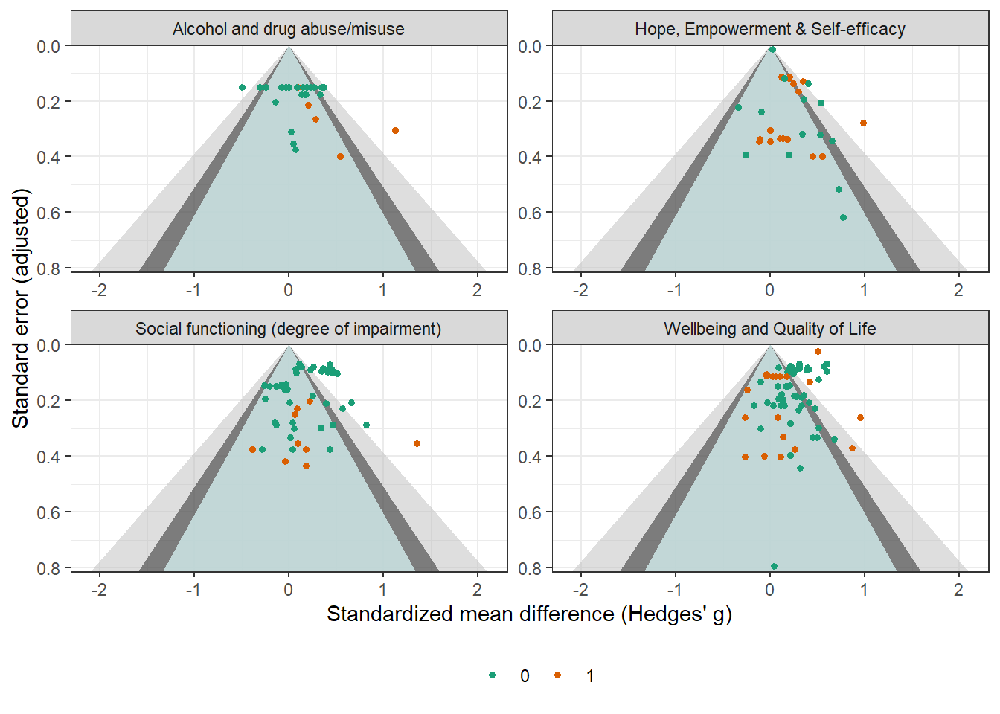
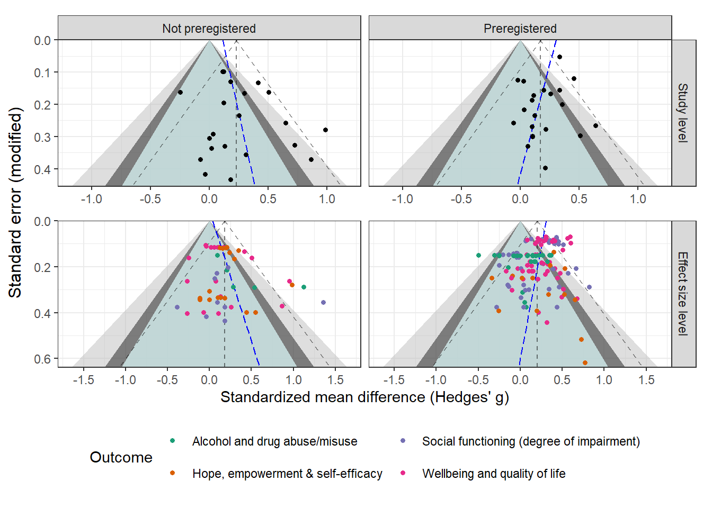

Show the code
reintergation_dat <- readRDS("ES calc/reintergation_dat.rds")
reintergation_datreintergation_dat <- readRDS("ES calc/reintergation_dat.rds")
reintergation_dat| Authors (year) | N_t | N_c | 1/N_t + 1/N_c | Outcome construct | gt | vgt | Wgt | Wse | p_val | No protocol | Overall RoB |
|---|---|---|---|---|---|---|---|---|---|---|---|
| Acarturk et al. 2022 | 24 | 22 | 0.087 | Wellbeing and quality of life | 0.314 | 0.196 | 0.195 | 0.442 | 0.477 | 0 | Some concerns |
| Acarturk et al. 2022 | 24 | 22 | 0.087 | Wellbeing and quality of life | -0.103 | 0.091 | 0.091 | 0.301 | 0.733 | 0 | High |
| Barbic et al. 2009 | 16 | 17 | 0.121 | Hope, empowerment & self-efficacy | 0.443 | 0.162 | 0.159 | 0.399 | 0.267 | 1 | Some concerns |
| Barbic et al. 2009 | 16 | 17 | 0.121 | Wellbeing and quality of life | -0.069 | 0.159 | 0.159 | 0.399 | 0.863 | 1 | Some concerns |
| Barbic et al. 2009 | 16 | 17 | 0.121 | Hope, empowerment & self-efficacy | 0.548 | 0.164 | 0.159 | 0.399 | 0.170 | 1 | Some concerns |
| Bond et al. 2015 | 43 | 42 | 0.047 | Hope, empowerment & self-efficacy | 0.000 | 0.094 | 0.094 | 0.306 | 1.000 | 1 | Some concerns |
| Bækkelund et al. 2022 | 29 | 30 | 0.068 | Social functioning (degree of impairment) | -0.138 | 0.082 | 0.082 | 0.286 | 0.631 | 0 | Low |
| Bækkelund et al. 2022 | 29 | 30 | 0.068 | Social functioning (degree of impairment) | 0.340 | 0.089 | 0.088 | 0.297 | 0.253 | 0 | Low |
| Cano-Vindel et al. 2021 | 315 | 316 | 0.006 | Social functioning (degree of impairment) | 0.259 | 0.006 | 0.006 | 0.080 | 0.001 | 0 | Low |
| Cano-Vindel et al. 2021 | 315 | 316 | 0.006 | Social functioning (degree of impairment) | 0.428 | 0.005 | 0.005 | 0.072 | 0.000 | 0 | Low |
| Cano-Vindel et al. 2021 | 315 | 316 | 0.006 | Social functioning (degree of impairment) | 0.439 | 0.007 | 0.007 | 0.082 | 0.000 | 0 | Low |
| Cano-Vindel et al. 2021 | 315 | 316 | 0.006 | Wellbeing and quality of life | 0.565 | 0.006 | 0.006 | 0.076 | 0.000 | 0 | Low |
| Cano-Vindel et al. 2021 | 315 | 316 | 0.006 | Wellbeing and quality of life | 0.593 | 0.005 | 0.005 | 0.069 | 0.000 | 0 | Low |
| Cano-Vindel et al. 2021 | 315 | 316 | 0.006 | Wellbeing and quality of life | 0.305 | 0.005 | 0.005 | 0.069 | 0.000 | 0 | Low |
| Cano-Vindel et al. 2021 | 315 | 316 | 0.006 | Wellbeing and quality of life | 0.389 | 0.007 | 0.007 | 0.083 | 0.000 | 0 | Low |
| Cano-Vindel et al. 2021 | 273 | 238 | 0.008 | Social functioning (degree of impairment) | 0.066 | 0.008 | 0.008 | 0.088 | 0.450 | 0 | Low |
| Cano-Vindel et al. 2021 | 273 | 238 | 0.008 | Social functioning (degree of impairment) | 0.128 | 0.006 | 0.006 | 0.079 | 0.104 | 0 | Low |
| Cano-Vindel et al. 2021 | 273 | 238 | 0.008 | Social functioning (degree of impairment) | 0.224 | 0.008 | 0.008 | 0.090 | 0.013 | 0 | Low |
| Cano-Vindel et al. 2021 | 273 | 238 | 0.008 | Wellbeing and quality of life | 0.301 | 0.007 | 0.007 | 0.083 | 0.000 | 0 | Low |
| Cano-Vindel et al. 2021 | 273 | 238 | 0.008 | Wellbeing and quality of life | 0.308 | 0.006 | 0.006 | 0.076 | 0.000 | 0 | Low |
| Cano-Vindel et al. 2021 | 273 | 238 | 0.008 | Wellbeing and quality of life | 0.211 | 0.006 | 0.006 | 0.076 | 0.005 | 0 | Low |
| Cano-Vindel et al. 2021 | 273 | 238 | 0.008 | Wellbeing and quality of life | 0.194 | 0.008 | 0.008 | 0.091 | 0.033 | 0 | Low |
| Cano-Vindel et al. 2021 | 229 | 204 | 0.009 | Social functioning (degree of impairment) | 0.342 | 0.009 | 0.009 | 0.095 | 0.000 | 0 | Low |
| Cano-Vindel et al. 2021 | 229 | 204 | 0.009 | Social functioning (degree of impairment) | 0.357 | 0.008 | 0.007 | 0.086 | 0.000 | 0 | Low |
| Cano-Vindel et al. 2021 | 229 | 204 | 0.009 | Social functioning (degree of impairment) | 0.403 | 0.010 | 0.010 | 0.098 | 0.000 | 0 | Low |
| Cano-Vindel et al. 2021 | 229 | 204 | 0.009 | Wellbeing and quality of life | 0.381 | 0.008 | 0.008 | 0.091 | 0.000 | 0 | Low |
| Cano-Vindel et al. 2021 | 229 | 204 | 0.009 | Wellbeing and quality of life | 0.232 | 0.007 | 0.007 | 0.082 | 0.005 | 0 | Low |
| Cano-Vindel et al. 2021 | 229 | 204 | 0.009 | Wellbeing and quality of life | 0.083 | 0.007 | 0.007 | 0.082 | 0.313 | 0 | Low |
| Cano-Vindel et al. 2021 | 229 | 204 | 0.009 | Wellbeing and quality of life | 0.179 | 0.010 | 0.010 | 0.099 | 0.072 | 0 | Low |
| Cano-Vindel et al. 2021 | 208 | 180 | 0.010 | Social functioning (degree of impairment) | 0.455 | 0.010 | 0.010 | 0.101 | 0.000 | 0 | Low |
| Cano-Vindel et al. 2021 | 208 | 180 | 0.010 | Social functioning (degree of impairment) | 0.457 | 0.008 | 0.008 | 0.091 | 0.000 | 0 | Low |
| Cano-Vindel et al. 2021 | 208 | 180 | 0.010 | Social functioning (degree of impairment) | 0.512 | 0.011 | 0.011 | 0.103 | 0.000 | 0 | Low |
| Cano-Vindel et al. 2021 | 208 | 180 | 0.010 | Wellbeing and quality of life | 0.598 | 0.010 | 0.009 | 0.096 | 0.000 | 0 | Low |
| Cano-Vindel et al. 2021 | 208 | 180 | 0.010 | Wellbeing and quality of life | 0.410 | 0.008 | 0.008 | 0.087 | 0.000 | 0 | Low |
| Cano-Vindel et al. 2021 | 208 | 180 | 0.010 | Wellbeing and quality of life | 0.281 | 0.008 | 0.008 | 0.087 | 0.001 | 0 | Low |
| Cano-Vindel et al. 2021 | 208 | 180 | 0.010 | Wellbeing and quality of life | 0.245 | 0.011 | 0.011 | 0.105 | 0.019 | 0 | Low |
| Craigie & Nathan 2009 | 157 | 77 | 0.019 | Wellbeing and quality of life | -0.247 | 0.026 | 0.026 | 0.162 | 0.128 | 1 | Serious |
| Crawford et al. 2012 | 121 | 121 | 0.017 | Social functioning (degree of impairment) | -0.020 | 0.025 | 0.025 | 0.159 | 0.900 | 0 | Low |
| Crawford et al. 2012 | 119 | 121 | 0.017 | Social functioning (degree of impairment) | -0.046 | 0.026 | 0.026 | 0.160 | 0.774 | 0 | Low |
| Crawford et al. 2012 | 121 | 117 | 0.017 | Social functioning (degree of impairment) | -0.037 | 0.020 | 0.020 | 0.141 | 0.792 | 0 | Low |
| Crawford et al. 2012 | 117 | 117 | 0.017 | Social functioning (degree of impairment) | -0.083 | 0.020 | 0.020 | 0.142 | 0.558 | 0 | Low |
| Crawford et al. 2012 | 121 | 121 | 0.017 | Social functioning (degree of impairment) | -0.265 | 0.022 | 0.021 | 0.147 | 0.070 | 0 | Low |
| Crawford et al. 2012 | 119 | 121 | 0.017 | Social functioning (degree of impairment) | -0.137 | 0.022 | 0.022 | 0.147 | 0.352 | 0 | Low |
| Crawford et al. 2012 | 121 | 117 | 0.017 | Social functioning (degree of impairment) | -0.209 | 0.022 | 0.022 | 0.147 | 0.157 | 0 | Low |
| Crawford et al. 2012 | 117 | 117 | 0.017 | Social functioning (degree of impairment) | -0.081 | 0.022 | 0.022 | 0.149 | 0.588 | 0 | Low |
| Crawford et al. 2012 | 121 | 121 | 0.017 | Wellbeing and quality of life | 0.203 | 0.022 | 0.021 | 0.147 | 0.167 | 0 | Low |
| Crawford et al. 2012 | 119 | 121 | 0.017 | Wellbeing and quality of life | 0.074 | 0.022 | 0.022 | 0.147 | 0.616 | 0 | Low |
| Crawford et al. 2012 | 121 | 117 | 0.017 | Wellbeing and quality of life | 0.177 | 0.022 | 0.022 | 0.147 | 0.229 | 0 | Low |
| Crawford et al. 2012 | 117 | 117 | 0.017 | Wellbeing and quality of life | 0.166 | 0.022 | 0.022 | 0.149 | 0.266 | 0 | Low |
| Druss et al. 2010 | 41 | 39 | 0.050 | Wellbeing and quality of life | 0.207 | 0.065 | 0.065 | 0.254 | 0.416 | 0 | High |
| Druss et al. 2010 | 41 | 39 | 0.050 | Wellbeing and quality of life | 0.035 | 0.065 | 0.065 | 0.254 | 0.890 | 0 | High |
| Druss et al. 2018 | 198 | 202 | 0.010 | Hope, empowerment & self-efficacy | 0.204 | 0.013 | 0.013 | 0.114 | 0.074 | 1 | Some concerns |
| Druss et al. 2018 | 198 | 202 | 0.010 | Wellbeing and quality of life | 0.055 | 0.013 | 0.013 | 0.114 | 0.630 | 1 | Some concerns |
| Druss et al. 2018 | 198 | 202 | 0.010 | Wellbeing and quality of life | 0.019 | 0.013 | 0.013 | 0.114 | 0.866 | 1 | Some concerns |
| Druss et al. 2018 | 198 | 202 | 0.010 | Hope, empowerment & self-efficacy | 0.113 | 0.013 | 0.013 | 0.114 | 0.321 | 1 | Some concerns |
| Druss et al. 2018 | 198 | 202 | 0.010 | Wellbeing and quality of life | 0.102 | 0.013 | 0.013 | 0.114 | 0.373 | 1 | Some concerns |
| Druss et al. 2018 | 198 | 202 | 0.010 | Wellbeing and quality of life | 0.169 | 0.013 | 0.013 | 0.114 | 0.140 | 1 | Some concerns |
| Gestel-Timmermans et al. 2012 | 136 | 117 | 0.016 | Hope, empowerment & self-efficacy | 0.193 | 0.014 | 0.014 | 0.118 | 0.102 | 1 | High |
| Gestel-Timmermans et al. 2012 | 121 | 99 | 0.018 | Hope, empowerment & self-efficacy | 0.156 | 0.014 | 0.014 | 0.120 | 0.191 | 1 | High |
| Gestel-Timmermans et al. 2012 | 132 | 118 | 0.016 | Hope, empowerment & self-efficacy | 0.122 | 0.014 | 0.014 | 0.117 | 0.298 | 1 | High |
| Gestel-Timmermans et al. 2012 | 120 | 97 | 0.019 | Hope, empowerment & self-efficacy | 0.348 | 0.017 | 0.017 | 0.129 | 0.007 | 1 | High |
| Gestel-Timmermans et al. 2012 | 124 | 114 | 0.017 | Wellbeing and quality of life | -0.045 | 0.011 | 0.011 | 0.106 | 0.675 | 1 | High |
| Gestel-Timmermans et al. 2012 | 111 | 97 | 0.019 | Wellbeing and quality of life | -0.039 | 0.012 | 0.012 | 0.111 | 0.727 | 1 | High |
| Gatz et al. 2007 | 136 | 177 | 0.013 | Alcohol and drug abuse/misuse | 0.094 | 0.023 | 0.022 | 0.150 | 0.531 | 1 | Serious |
| Gatz et al. 2007 | 135 | 176 | 0.013 | Alcohol and drug abuse/misuse | 0.204 | 0.046 | 0.046 | 0.214 | 0.340 | 1 | Serious |
| Gatz et al. 2007 | 134 | 173 | 0.013 | Hope, empowerment & self-efficacy | 0.241 | 0.019 | 0.019 | 0.138 | 0.081 | 1 | Serious |
| Gonzalez & Prihoda 2007 | 8 | 9 | 0.236 | Social functioning (degree of impairment) | 0.181 | 0.190 | 0.189 | 0.434 | 0.677 | 1 | Serious |
| Gordon et al. 2018 | 21 | 15 | 0.114 | Wellbeing and quality of life | 0.258 | 0.142 | 0.141 | 0.375 | 0.492 | 1 | Some concerns |
| Gordon et al. 2018 | 21 | 15 | 0.114 | Social functioning (degree of impairment) | -0.388 | 0.143 | 0.141 | 0.375 | 0.301 | 1 | Some concerns |
| Gordon et al. 2018 | 21 | 15 | 0.114 | Social functioning (degree of impairment) | 0.183 | 0.141 | 0.141 | 0.375 | 0.627 | 1 | Some concerns |
| Gutman et al. 2019 | 10 | 10 | 0.200 | Wellbeing and quality of life | 0.501 | 0.033 | 0.026 | 0.162 | 0.002 | 1 | Serious |
| Hagen et al. 2005 | 14 | 17 | 0.130 | Social functioning (degree of impairment) | -0.039 | 0.174 | 0.174 | 0.418 | 0.925 | 1 | High |
| Hilden et al. 2021 | 23 | 12 | 0.127 | Alcohol and drug abuse/misuse | 0.070 | 0.140 | 0.140 | 0.375 | 0.852 | 0 | High |
| Hilden et al. 2021 | 23 | 12 | 0.127 | Social functioning (degree of impairment) | -0.283 | 0.142 | 0.140 | 0.375 | 0.450 | 0 | High |
| Hilden et al. 2021 | 23 | 12 | 0.127 | Social functioning (degree of impairment) | 0.434 | 0.143 | 0.140 | 0.375 | 0.247 | 0 | High |
| Hilden et al. 2021 | 23 | 12 | 0.127 | Social functioning (degree of impairment) | 0.036 | 0.140 | 0.140 | 0.375 | 0.924 | 0 | High |
| Himle et al. 2014 | 29 | 29 | 0.069 | Social functioning (degree of impairment) | 0.464 | 0.085 | 0.083 | 0.288 | 0.107 | 0 | Some concerns |
| Himle et al. 2014 | 29 | 29 | 0.069 | Social functioning (degree of impairment) | 0.819 | 0.089 | 0.083 | 0.288 | 0.004 | 0 | Some concerns |
| James et al. 2004 | 29 | 29 | 0.069 | Alcohol and drug abuse/misuse | 1.120 | 0.094 | 0.083 | 0.288 | 0.000 | 1 | Some concerns |
| James et al. 2004 | 29 | 29 | 0.069 | Alcohol and drug abuse/misuse | 0.281 | 0.083 | 0.083 | 0.288 | 0.329 | 1 | Some concerns |
| James et al. 2004 | 28 | 29 | 0.070 | Alcohol and drug abuse/misuse | 0.538 | 0.087 | 0.085 | 0.291 | 0.064 | 1 | Some concerns |
| Kanie et al. 2019 | 32 | 29 | 0.066 | Social functioning (degree of impairment) | -0.151 | 0.078 | 0.078 | 0.279 | 0.589 | 0 | Low |
| Kanie et al. 2019 | 32 | 29 | 0.066 | Social functioning (degree of impairment) | 0.037 | 0.078 | 0.078 | 0.279 | 0.896 | 0 | Low |
| Lim et al. 2020 | 18 | 21 | 0.103 | Wellbeing and quality of life | 0.862 | 0.148 | 0.137 | 0.371 | 0.020 | 1 | Serious |
| Lloyd-Evans et al. 2020 | 25 | 10 | 0.140 | Wellbeing and quality of life | 0.214 | 0.159 | 0.158 | 0.398 | 0.590 | 0 | Low |
| Madigan et al. 2013 | 36 | 18 | 0.083 | Alcohol and drug abuse/misuse | 0.024 | 0.097 | 0.097 | 0.312 | 0.940 | 0 | Some concerns |
| Madigan et al. 2013 | 39 | 19 | 0.078 | Social functioning (degree of impairment) | 0.056 | 0.091 | 0.091 | 0.302 | 0.852 | 0 | Some concerns |
| Madigan et al. 2013 | 34 | 15 | 0.096 | Wellbeing and quality of life | 0.490 | 0.113 | 0.110 | 0.332 | 0.139 | 0 | Some concerns |
| Madigan et al. 2013 | 28 | 14 | 0.107 | Alcohol and drug abuse/misuse | 0.049 | 0.125 | 0.125 | 0.354 | 0.891 | 0 | Some concerns |
| Madigan et al. 2013 | 31 | 16 | 0.095 | Social functioning (degree of impairment) | 0.010 | 0.111 | 0.111 | 0.333 | 0.976 | 0 | Some concerns |
| Madigan et al. 2013 | 34 | 14 | 0.101 | Wellbeing and quality of life | 0.677 | 0.119 | 0.114 | 0.338 | 0.045 | 0 | Some concerns |
| McCay et al. 2006 | 26 | 14 | 0.110 | Wellbeing and quality of life | 0.129 | 0.109 | 0.108 | 0.329 | 0.694 | 1 | Serious |
| McCay et al. 2007 | 29 | 18 | 0.090 | Wellbeing and quality of life | 0.509 | 0.019 | 0.016 | 0.126 | 0.000 | 0 | High |
| McCay et al. 2007 | 29 | 18 | 0.090 | Hope, empowerment & self-efficacy | 0.400 | 0.021 | 0.019 | 0.137 | 0.004 | 0 | High |
| Michalak et al. 2015 | 36 | 35 | 0.056 | Wellbeing and quality of life | 0.299 | 0.055 | 0.054 | 0.233 | 0.200 | 0 | Some concerns |
| Michalak et al. 2015 | 35 | 35 | 0.057 | Wellbeing and quality of life | 0.349 | 0.033 | 0.032 | 0.180 | 0.052 | 0 | Some concerns |
| Michalak et al. 2015 | 36 | 35 | 0.056 | Wellbeing and quality of life | 0.115 | 0.032 | 0.031 | 0.177 | 0.518 | 0 | Some concerns |
| Michalak et al. 2015 | 35 | 35 | 0.057 | Wellbeing and quality of life | 0.329 | 0.037 | 0.036 | 0.190 | 0.083 | 0 | Some concerns |
| Michalak et al. 2015 | 36 | 35 | 0.056 | Wellbeing and quality of life | 0.472 | 0.054 | 0.052 | 0.229 | 0.039 | 0 | Some concerns |
| Michalak et al. 2015 | 35 | 35 | 0.057 | Wellbeing and quality of life | 0.410 | 0.044 | 0.043 | 0.207 | 0.048 | 0 | Some concerns |
| Michalak et al. 2015 | 36 | 35 | 0.056 | Wellbeing and quality of life | 0.134 | 0.039 | 0.038 | 0.196 | 0.495 | 0 | Some concerns |
| Michalak et al. 2015 | 35 | 35 | 0.057 | Wellbeing and quality of life | 0.270 | 0.035 | 0.035 | 0.186 | 0.148 | 0 | Some concerns |
| Michalak et al. 2015 | 36 | 35 | 0.056 | Social functioning (degree of impairment) | 0.567 | 0.055 | 0.052 | 0.229 | 0.013 | 0 | Some concerns |
| Michalak et al. 2015 | 35 | 35 | 0.057 | Social functioning (degree of impairment) | 0.389 | 0.045 | 0.044 | 0.209 | 0.063 | 0 | Some concerns |
| Morley et al. 2014 | 122 | 63 | 0.024 | Hope, empowerment & self-efficacy | 0.296 | 0.028 | 0.027 | 0.166 | 0.074 | 1 | Some concerns |
| Morton et al. 2012 | 21 | 20 | 0.098 | Hope, empowerment & self-efficacy | 0.985 | 0.091 | 0.078 | 0.279 | 0.000 | 1 | Some concerns |
| Patterson et al. 2003 | 16 | 16 | 0.125 | Wellbeing and quality of life | 0.109 | 0.163 | 0.162 | 0.403 | 0.787 | 1 | Some concerns |
| Patterson et al. 2003 | 16 | 16 | 0.125 | Wellbeing and quality of life | -0.268 | 0.164 | 0.162 | 0.403 | 0.506 | 1 | Some concerns |
| Rabenstein et al. 2016 | 153 | 148 | 0.013 | Wellbeing and quality of life | 0.415 | 0.018 | 0.018 | 0.133 | 0.002 | 1 | Moderate |
| Rosenblum et al. 2014 | 91 | 70 | 0.025 | Alcohol and drug abuse/misuse | 0.129 | 0.032 | 0.032 | 0.178 | 0.468 | 0 | Some concerns |
| Rosenblum et al. 2014 | 91 | 70 | 0.025 | Alcohol and drug abuse/misuse | 0.325 | 0.032 | 0.032 | 0.178 | 0.067 | 0 | Some concerns |
| Rosenblum et al. 2014 | 91 | 70 | 0.025 | Alcohol and drug abuse/misuse | 0.168 | 0.032 | 0.032 | 0.178 | 0.344 | 0 | Some concerns |
| Rosenblum et al. 2014 | 91 | 70 | 0.025 | Alcohol and drug abuse/misuse | 0.178 | 0.032 | 0.032 | 0.178 | 0.317 | 0 | Some concerns |
| Russinova et al. 2018 | 22 | 26 | 0.084 | Hope, empowerment & self-efficacy | 0.131 | 0.112 | 0.112 | 0.334 | 0.696 | 1 | Some concerns |
| Russinova et al. 2018 | 22 | 26 | 0.084 | Hope, empowerment & self-efficacy | 0.101 | 0.112 | 0.112 | 0.334 | 0.762 | 1 | Some concerns |
| Russinova et al. 2018 | 21 | 24 | 0.089 | Hope, empowerment & self-efficacy | -0.117 | 0.119 | 0.118 | 0.344 | 0.733 | 1 | Some concerns |
| Russinova et al. 2018 | 22 | 25 | 0.085 | Hope, empowerment & self-efficacy | 0.181 | 0.114 | 0.113 | 0.337 | 0.591 | 1 | Some concerns |
| Russinova et al. 2018 | 22 | 25 | 0.085 | Hope, empowerment & self-efficacy | -0.113 | 0.113 | 0.113 | 0.337 | 0.737 | 1 | Some concerns |
| Russinova et al. 2018 | 21 | 24 | 0.089 | Hope, empowerment & self-efficacy | 0.000 | 0.118 | 0.118 | 0.344 | 1.000 | 1 | Some concerns |
| Rüsch et al. 2019 | 18 | 17 | 0.114 | Hope, empowerment & self-efficacy | 0.333 | 0.104 | 0.102 | 0.319 | 0.297 | 0 | Some concerns |
| Rüsch et al. 2019 | 18 | 17 | 0.114 | Hope, empowerment & self-efficacy | -0.094 | 0.057 | 0.057 | 0.239 | 0.694 | 0 | Some concerns |
| Rüsch et al. 2019 | 18 | 17 | 0.114 | Hope, empowerment & self-efficacy | 0.650 | 0.125 | 0.118 | 0.344 | 0.059 | 0 | Some concerns |
| Rüsch et al. 2019 | 18 | 17 | 0.114 | Hope, empowerment & self-efficacy | 0.522 | 0.107 | 0.103 | 0.321 | 0.104 | 0 | Some concerns |
| Rüsch et al. 2019 | 20 | 13 | 0.127 | Hope, empowerment & self-efficacy | 0.196 | 0.155 | 0.154 | 0.393 | 0.617 | 0 | Some concerns |
| Rüsch et al. 2019 | 20 | 13 | 0.127 | Hope, empowerment & self-efficacy | -0.258 | 0.155 | 0.154 | 0.393 | 0.510 | 0 | Some concerns |
| Rüsch et al. 2019 | 20 | 13 | 0.127 | Hope, empowerment & self-efficacy | 0.772 | 0.391 | 0.381 | 0.617 | 0.211 | 0 | Some concerns |
| Rüsch et al. 2019 | 20 | 13 | 0.127 | Hope, empowerment & self-efficacy | 0.724 | 0.274 | 0.266 | 0.515 | 0.160 | 0 | Some concerns |
| Sacks et al. 2011 | 38 | 38 | 0.053 | Wellbeing and quality of life | 0.074 | 0.068 | 0.068 | 0.262 | 0.779 | 1 | Some concerns |
| Sacks et al. 2011 | 38 | 38 | 0.053 | Wellbeing and quality of life | -0.269 | 0.069 | 0.068 | 0.262 | 0.303 | 1 | Some concerns |
| Sacks et al. 2011 | 38 | 38 | 0.053 | Wellbeing and quality of life | 0.953 | 0.075 | 0.068 | 0.262 | 0.000 | 1 | Some concerns |
| Sajatovic et al. 2009 | 61 | 61 | 0.033 | Social functioning (degree of impairment) | 0.220 | 0.041 | 0.041 | 0.202 | 0.278 | 1 | Some concerns |
| Sajatovic et al. 2009 | 46 | 53 | 0.041 | Social functioning (degree of impairment) | 0.086 | 0.052 | 0.052 | 0.228 | 0.706 | 1 | Some concerns |
| Sajatovic et al. 2009 | 40 | 39 | 0.051 | Social functioning (degree of impairment) | 0.059 | 0.063 | 0.063 | 0.251 | 0.814 | 1 | Some concerns |
| Schrank et al. 2016 | 43 | 41 | 0.048 | Wellbeing and quality of life | -0.104 | 0.062 | 0.061 | 0.248 | 0.675 | 0 | Low |
| Schrank et al. 2016 | 43 | 41 | 0.048 | Wellbeing and quality of life | 0.445 | 0.063 | 0.061 | 0.248 | 0.073 | 0 | Low |
| Schrank et al. 2016 | 43 | 41 | 0.048 | Hope, empowerment & self-efficacy | -0.341 | 0.062 | 0.061 | 0.248 | 0.169 | 0 | Low |
| Schrank et al. 2016 | 43 | 41 | 0.048 | Hope, empowerment & self-efficacy | 0.021 | 0.061 | 0.061 | 0.248 | 0.932 | 0 | Low |
| Schrank et al. 2016 | 43 | 41 | 0.048 | Hope, empowerment & self-efficacy | 0.148 | 0.062 | 0.061 | 0.248 | 0.550 | 0 | Low |
| Schäfer et al. 2019 | 115 | 117 | 0.017 | Alcohol and drug abuse/misuse | 0.144 | 0.023 | 0.022 | 0.150 | 0.338 | 0 | Some concerns |
| Schäfer et al. 2019 | 111 | 117 | 0.018 | Alcohol and drug abuse/misuse | 0.151 | 0.023 | 0.023 | 0.152 | 0.320 | 0 | Some concerns |
| Schäfer et al. 2019 | 115 | 117 | 0.017 | Alcohol and drug abuse/misuse | 0.346 | 0.023 | 0.022 | 0.150 | 0.021 | 0 | Some concerns |
| Schäfer et al. 2019 | 111 | 117 | 0.018 | Alcohol and drug abuse/misuse | -0.036 | 0.023 | 0.023 | 0.152 | 0.813 | 0 | Some concerns |
| Schäfer et al. 2019 | 115 | 117 | 0.017 | Alcohol and drug abuse/misuse | 0.223 | 0.023 | 0.022 | 0.150 | 0.137 | 0 | Some concerns |
| Schäfer et al. 2019 | 111 | 117 | 0.018 | Alcohol and drug abuse/misuse | 0.148 | 0.023 | 0.023 | 0.152 | 0.328 | 0 | Some concerns |
| Schäfer et al. 2019 | 115 | 117 | 0.017 | Alcohol and drug abuse/misuse | 0.088 | 0.022 | 0.022 | 0.150 | 0.558 | 0 | Some concerns |
| Schäfer et al. 2019 | 111 | 117 | 0.018 | Alcohol and drug abuse/misuse | 0.000 | 0.023 | 0.023 | 0.152 | 1.000 | 0 | Some concerns |
| Schäfer et al. 2019 | 115 | 117 | 0.017 | Alcohol and drug abuse/misuse | 0.369 | 0.023 | 0.022 | 0.150 | 0.014 | 0 | Some concerns |
| Schäfer et al. 2019 | 111 | 117 | 0.018 | Alcohol and drug abuse/misuse | 0.184 | 0.023 | 0.023 | 0.152 | 0.225 | 0 | Some concerns |
| Schäfer et al. 2019 | 115 | 117 | 0.017 | Alcohol and drug abuse/misuse | 0.264 | 0.023 | 0.022 | 0.150 | 0.078 | 0 | Some concerns |
| Schäfer et al. 2019 | 111 | 117 | 0.018 | Alcohol and drug abuse/misuse | 0.084 | 0.023 | 0.023 | 0.152 | 0.579 | 0 | Some concerns |
| Schäfer et al. 2019 | 115 | 117 | 0.017 | Alcohol and drug abuse/misuse | -0.306 | 0.023 | 0.022 | 0.150 | 0.041 | 0 | Some concerns |
| Schäfer et al. 2019 | 111 | 117 | 0.018 | Alcohol and drug abuse/misuse | -0.074 | 0.023 | 0.023 | 0.152 | 0.625 | 0 | Some concerns |
| Schäfer et al. 2019 | 115 | 117 | 0.017 | Alcohol and drug abuse/misuse | -0.495 | 0.023 | 0.022 | 0.150 | 0.001 | 0 | Some concerns |
| Schäfer et al. 2019 | 111 | 117 | 0.018 | Alcohol and drug abuse/misuse | -0.249 | 0.023 | 0.023 | 0.152 | 0.100 | 0 | Some concerns |
| Schäfer et al. 2019 | 115 | 117 | 0.017 | Alcohol and drug abuse/misuse | -0.249 | 0.023 | 0.022 | 0.150 | 0.096 | 0 | Some concerns |
| Schäfer et al. 2019 | 111 | 117 | 0.018 | Alcohol and drug abuse/misuse | -0.080 | 0.023 | 0.023 | 0.152 | 0.600 | 0 | Some concerns |
| Somers et al. 2017 | 90 | 100 | 0.021 | Social functioning (degree of impairment) | 0.252 | 0.034 | 0.034 | 0.184 | 0.171 | 0 | Low |
| Somers et al. 2017 | 90 | 100 | 0.021 | Social functioning (degree of impairment) | 0.661 | 0.044 | 0.043 | 0.208 | 0.001 | 0 | Low |
| Somers et al. 2017 | 90 | 100 | 0.021 | Alcohol and drug abuse/misuse | -0.143 | 0.041 | 0.041 | 0.203 | 0.480 | 0 | Low |
| Somers et al. 2017 | 90 | 100 | 0.021 | Wellbeing and quality of life | 0.250 | 0.034 | 0.033 | 0.183 | 0.171 | 0 | Low |
| Tjaden et al. 2021 | 70 | 67 | 0.029 | Hope, empowerment & self-efficacy | 0.353 | 0.038 | 0.038 | 0.194 | 0.069 | 0 | Low |
| Tjaden et al. 2021 | 70 | 67 | 0.029 | Wellbeing and quality of life | 0.082 | 0.038 | 0.038 | 0.194 | 0.671 | 0 | Low |
| Tjaden et al. 2021 | 70 | 67 | 0.029 | Social functioning (degree of impairment) | -0.254 | 0.038 | 0.038 | 0.194 | 0.191 | 0 | Low |
| Tjaden et al. 2021 | 63 | 58 | 0.033 | Hope, empowerment & self-efficacy | 0.532 | 0.044 | 0.042 | 0.206 | 0.010 | 0 | Low |
| Tjaden et al. 2021 | 63 | 58 | 0.033 | Wellbeing and quality of life | -0.032 | 0.042 | 0.042 | 0.206 | 0.875 | 0 | Low |
| Tjaden et al. 2021 | 63 | 58 | 0.033 | Social functioning (degree of impairment) | 0.008 | 0.042 | 0.042 | 0.206 | 0.970 | 0 | Low |
| Valiente et al. 2022 | 52 | 61 | 0.036 | Wellbeing and quality of life | 0.150 | 0.048 | 0.047 | 0.218 | 0.492 | 0 | Low |
| Valiente et al. 2022 | 52 | 61 | 0.036 | Wellbeing and quality of life | 0.104 | 0.048 | 0.047 | 0.218 | 0.632 | 0 | Low |
| Valiente et al. 2022 | 52 | 61 | 0.036 | Wellbeing and quality of life | 0.138 | 0.048 | 0.047 | 0.218 | 0.526 | 0 | Low |
| Valiente et al. 2022 | 52 | 61 | 0.036 | Wellbeing and quality of life | 0.325 | 0.048 | 0.047 | 0.218 | 0.135 | 0 | Low |
| Valiente et al. 2022 | 52 | 61 | 0.036 | Wellbeing and quality of life | 0.136 | 0.048 | 0.047 | 0.218 | 0.533 | 0 | Low |
| Valiente et al. 2022 | 52 | 61 | 0.036 | Wellbeing and quality of life | 0.028 | 0.047 | 0.047 | 0.218 | 0.897 | 0 | Low |
| Valiente et al. 2022 | 52 | 61 | 0.036 | Wellbeing and quality of life | -0.172 | 0.048 | 0.047 | 0.218 | 0.429 | 0 | Low |
| Volpe et al. 2015 | 21 | 20 | 0.098 | Social functioning (degree of impairment) | 0.092 | 0.126 | 0.126 | 0.355 | 0.795 | 1 | Some concerns |
| Volpe et al. 2015 | 21 | 20 | 0.098 | Social functioning (degree of impairment) | 1.355 | 0.150 | 0.126 | 0.355 | 0.000 | 1 | Some concerns |
| Wojtalik et al. 2022 | 26 | 23 | 0.082 | Social functioning (degree of impairment) | 0.105 | 0.089 | 0.089 | 0.299 | 0.725 | 0 | Low |
| Wuthrich & Rapee 2013 | 27 | 35 | 0.066 | Wellbeing and quality of life | 0.511 | 0.091 | 0.089 | 0.298 | 0.086 | 0 | Some concerns |
reintergation_dat |>
summarise(
prereg_text = unique(prereg_text),
n_es = n(),
.by = author_year
) |>
summarise(
N_studies = n_distinct(author_year),
N_es = sum(n_es),
.by = prereg_text
)# A tibble: 2 × 3
prereg_text N_studies N_es
<chr> <int> <int>
1 Preregistered 21 127
2 Not preregistered 21 50reintegration_che_res <- .CHE_RVE(reintergation_dat)
reintegration_che_res |>
select(studies:UL, tau:sd_total, I2) |>
gt() |>
fmt_number(columns = 3:9, decimals = 3) |>
tab_header(
title = "Overall average effect size",
subtitle = "Across all reintegrational outcomes"
) | Overall average effect size | |||||||||
|---|---|---|---|---|---|---|---|---|---|
| Across all reintegrational outcomes | |||||||||
| studies | effects | avg_effect | se | LL | UL | tau | omega | sd_total | I2 |
| 42 | 177 | 0.194 | 0.035 | 0.121 | 0.267 | 0.049 | 0.177 | 0.184 | 81.82 |
reintegration_sce_res <-
.SCEp(mod = analysis_plan, data = reintergation_dat)
reintegration_sce_res |>
select(Moderator:pval) |>
gt()|>
fmt_number(columns = 4:10, decimals = 3) |>
tab_header(
title = "Overall average effect sizes",
subtitle = "Across reintegrational subgroups"
) | Overall average effect sizes | |||||||||
|---|---|---|---|---|---|---|---|---|---|
| Across reintegrational subgroups | |||||||||
| Moderator | studies | effects | avg_effect | LL | UL | df_satt | SD_total | F_t | pval |
| Analysis plan | 42 | 177 | NA | NA | NA | NA | NA | 1.362 | 0.302 |
| Alcohol and drug abuse/misuse | 7 | 31 | 0.084 | −0.099 | 0.268 | 4.195 | 0.208 | 1.257 | 0.274 |
| Hope, empowerment & self-efficacy | 12 | 32 | 0.273 | 0.130 | 0.416 | 9.379 | 0.172 | 4.287 | 0.002 |
| Social functioning (degree of impairment) | 16 | 47 | 0.147 | −0.010 | 0.305 | 12.218 | 0.214 | 2.037 | 0.064 |
| Wellbeing and quality of life | 24 | 67 | 0.212 | 0.115 | 0.309 | 13.861 | 0.168 | 4.687 | 0.000 |
rho <- 0.7
# CHE pub bias
V_mat <- vcalc(Wgt, cluster = author_year, obs = esid, data = reintergation_dat, rho = rho)
W <- solve(V_mat)
optimizers <- c("nlminb","nloptr","Rvmmin","BFGS")
mod <- "Non-converged"
i <- 1L
while (!inherits(mod, "rma.mv") & i <= 4L) {
mod <- tryCatch(
rma.mv(
yi = gt,
V = V_mat,
W = W,
mods = ~ Wse,
random = ~ 1 | author_year / esid,
data = reintergation_dat,
sparse = TRUE,
control = list(optimizer=optimizers[i])
),
error = function(e) "Non-converged"
)
i <- i + 1L
}
RE <- rma(yi = gt, vi = Wgt, data = reintergation_dat)
egg_res <- regtest(RE)
egg_res
Regression Test for Funnel Plot Asymmetry
Model: mixed-effects meta-regression model
Predictor: standard error
Test for Funnel Plot Asymmetry: z = -0.7687, p = 0.4421
Limit Estimate (as sei -> 0): b = 0.2253 (CI: 0.1421, 0.3085)mod_robu <- robust(mod, cluster = author_year, clubSandwich = TRUE)
#mod_robu
overall_mean <- reintegration_che_res$avg_effect
y_lim_exp1 <- max(reintergation_dat$Wse) + 0.02
funnel_exp1 <- tribble(
~ x90, ~ x95, ~ x99, ~ y,
0, 0, 0, 0,
qnorm(0.05) * y_lim_exp1, qnorm(0.025) * y_lim_exp1, qnorm(0.005) * y_lim_exp1, y_lim_exp1,
qnorm(0.95) * y_lim_exp1, qnorm(0.975) * y_lim_exp1, qnorm(0.995) * y_lim_exp1, y_lim_exp1,
0, 0, 0, 0
)
line1 <- "dashed"
alpha_line <- 0.5
#png("Funnel plot overall.png", height = 4.5, width = 7, unit = "in", res = 600)
.fp_plot(outcome_name = "Reintegrational")
#dev.off()reintergation_dat |>
ggplot() +
geom_polygon(data = funnel_exp1, aes(x = y, y = x99), fill = "grey", alpha = 0.5) +
geom_polygon(data = funnel_exp1, aes(x = y, y = x95), fill = "grey10", alpha = 0.5) +
geom_polygon(data = funnel_exp1, aes(x = y, y = x90), fill = "lightcyan", alpha = 0.7) +
geom_point(aes(Wse, gt, color = factor(conventional)), alpha = 1, size = 1.2) +
scale_color_brewer(type = "qual", palette = 2) +
coord_flip() +
facet_wrap(~analysis_plan, scales = "free") +
scale_x_reverse(limits = c(y_lim_exp1, 0.0), expand = c(0,0)) +
scale_y_continuous(breaks = seq(-3, 3, 1)) +
theme_bw() +
labs(x = "Standard error (adjusted)",
y = "Standardized mean difference (Hedges' g)",
color = "", shape = "") +
theme(legend.position = "bottom")2
3
4
5
# CHE-ISCW
V_mat <- metafor::vcalc(vi = Wgt, cluster = author_year, obs = es_id, data = reintergation_dat, rho = 0.7)
W <- solve(V_mat)
# CHE
che <-
rma.mv(
yi = gt,
V = V_mat,
random = ~ 1 | author_year / es_id,
data = reintergation_dat,
sparse = TRUE
) |>
robust(cluster = author_year, clubSandwich = TRUE)
# ISCW
# CHE-ISCW-RVE
che_iscw <- rma.mv(
yi = gt,
V = V_mat,
W = W,
mods = ~ Wse,
random = ~ 1 | author_year / es_id,
data = reintergation_dat,
sparse = TRUE
) |>
robust(cluster = author_year, clubSandwich = TRUE)prereg_dat <-
reintergation_dat |>
filter(conventional == 0)
V_mat_prereg <- metafor::vcalc(vi = Wgt, cluster = author_year, obs = es_id, data = prereg_dat, rho = 0.7)
W_prereg <- solve(V_mat_prereg)
egg_prereg <-
rma.mv(
yi = gt,
V = V_mat_prereg,
W = W_prereg,
mods = ~ Wse,
random = ~ 1 | author_year / es_id,
data = prereg_dat,
sparse = TRUE
) |>
robust(cluster = author_year, clubSandwich = TRUE)
egg_prereg_res <-
tibble(
subgroup = "Preregistered",
egg_intercept = as.numeric(egg_prereg$b[1]),
egg_slope = as.numeric(egg_prereg$b[2])
)
notprereg_dat <-
reintergation_dat |>
filter(conventional == 1)
V_mat_notprereg <- metafor::vcalc(vi = Wgt, cluster = author_year, obs = es_id, data = notprereg_dat, rho = 0.7)
W_notprereg <- solve(V_mat_notprereg)
egg_notprereg <-
rma.mv(
yi = gt,
V = V_mat_notprereg,
W = W_notprereg,
mods = ~ Wse,
random = ~ 1 | author_year / es_id,
data = notprereg_dat,
sparse = TRUE
) |>
robust(cluster = author_year, clubSandwich = TRUE)
egg_notprereg_res <-
tibble(
subgroup = "Not preregistered",
egg_intercept = as.numeric(egg_notprereg$b[1]),
egg_slope = as.numeric(egg_notprereg$b[2])
)
egg_res_subgrouped <- bind_rows(egg_prereg_res, egg_notprereg_res)
egg_res_subgrouped# A tibble: 2 × 3
subgroup egg_intercept egg_slope
<chr> <dbl> <dbl>
1 Preregistered 0.3107 -0.5145
2 Not preregistered 0.03803 0.8826# SCEp+
subgroup_means <- .SCEp(mod = prereg_text, data = reintergation_dat)
subgroup_dat <-
reintergation_dat |>
summarise(
gt = mean(gt),
Wse = mean(Wse),
analysis_plan = analysis_plan[1],
.by = prereg_text
) |>
bind_cols(subgroup_means[2:3,], egg_res_subgrouped) |>
mutate(slope_low = qnorm(0.025), slope_high = qnorm(0.975), level = "Effect size level")
y_lim_exp1 <- max(reintergation_dat$Wse) + 0.02
y_lim_exp1 [1] 0.6371993funnel_exp1 <- tribble(
~ x90, ~ x95, ~ x99, ~ y,
0, 0, 0, 0,
qnorm(0.05) * y_lim_exp1, qnorm(0.025) * y_lim_exp1, qnorm(0.005) * y_lim_exp1, y_lim_exp1,
qnorm(0.95) * y_lim_exp1, qnorm(0.975) * y_lim_exp1, qnorm(0.995) * y_lim_exp1, y_lim_exp1,
0, 0, 0, 0
)
alpha_line <- 0.5
polygon_fill <- c("grey", "grey10", "lightcyan")
mean_line <- "dashed"
reg_test <- TRUE
reg_line <- "longdash"
reg_color <- "blue"
breaks_y <- seq(-3, 3, 0.5)
es_level_fp <-
reintergation_dat |>
mutate(level = "Effect size level") |>
ggplot() +
geom_polygon(data = funnel_exp1, aes(x = y, y = x99), fill = polygon_fill[1], alpha = 0.5) +
geom_polygon(data = funnel_exp1, aes(x = y, y = x95), fill = polygon_fill[2], alpha = 0.5) +
geom_polygon(data = funnel_exp1, aes(x = y, y = x90), fill = polygon_fill[3], alpha = 0.7) +
geom_abline(data = subgroup_dat, aes(slope = slope_high, intercept = avg_effect), linetype = mean_line, alpha = alpha_line) +
geom_hline(data = subgroup_dat, aes(yintercept = avg_effect), linetype = mean_line, alpha = alpha_line) +
geom_abline(data = subgroup_dat, aes(slope = slope_low, intercept = avg_effect), linetype = mean_line, alpha = alpha_line) +
geom_abline(data = subgroup_dat, aes(slope = -egg_slope, intercept = egg_intercept), linetype = reg_line, color = reg_color) +
geom_point(aes(Wse, gt, col = analysis_plan), alpha = 1, size = 1.2) +
scale_color_brewer(type = "qual", palette = 2) +
coord_flip() +
facet_grid(level~prereg_text) +
scale_x_reverse(limits = c(y_lim_exp1, 0.0), expand = c(0,0)) +
scale_y_continuous(breaks = breaks_y) +
theme_bw() +
labs(x = "Standard error (modified)",
y = "Standardized mean difference (Hedges' g)",
color = "", shape = "") +
theme(
legend.position = "bottom",
strip.text.x = element_blank()
) +
labs(color = "Outcome") +
guides(col = guide_legend(nrow = 2))
# Make aggregate plot
reintergation_dat_agg <-
reintergation_dat |>
escalc(measure = "SMD", yi = gt, vi = Wgt, data = _) |>
aggregate.escalc(cluster = author_year, rho = 0.7) |>
mutate(
Wse = sqrt(vi)
)
prereg_dat_agg <-
reintergation_dat_agg |>
as_tibble() |>
dplyr::filter(conventional == 0)
egg_prereg_agg <-
rma(yi = yi, vi = vi, data = prereg_dat_agg) |>
regtest()
egg_prereg_agg_res <-
tibble(
subgroup = "Preregistered",
egg_intercept = as.numeric(egg_prereg_agg$fit$b[1]),
egg_slope = as.numeric(egg_prereg_agg$fit$b[2])
)
notprereg_dat_agg <-
reintergation_dat_agg |>
as_tibble() |>
dplyr::filter(conventional == 1)
egg_notprereg_agg <-
rma(yi = yi, vi = vi, data = notprereg_dat_agg) |>
regtest()
egg_notprereg_agg_res <-
tibble(
subgroup = "Not preregistered",
egg_intercept = as.numeric(egg_notprereg_agg$fit$b[1]),
egg_slope = as.numeric(egg_notprereg_agg$fit$b[2])
)
egg_res_agg_subgrouped <- bind_rows(egg_notprereg_agg_res, egg_prereg_agg_res)
egg_res_agg_subgrouped# A tibble: 2 × 3
subgroup egg_intercept egg_slope
<chr> <dbl> <dbl>
1 Not preregistered 0.1111 0.6035
2 Preregistered 0.3037 -0.7280means_agg <-
rma(yi, vi, mods = ~ -1 +prereg_text, data = reintergation_dat_agg) |>
robust(cluster = author_year, clubSandwich = TRUE)
subgroup_means_agg <-
tibble(
Moderator = c("Not preregistered", "Preregistered"),
avg_effect = as.numeric(means_agg$b),
LL = as.numeric(means_agg$ci.lb),
UL = as.numeric(means_agg$ci.ub)
)
subgroup_dat_agg <-
reintergation_dat_agg |>
summarise(
gt = mean(gt),
Wse = mean(Wse),
analysis_plan = analysis_plan[1],
.by = prereg_text
) |>
arrange(prereg_text) |>
bind_cols(subgroup_means_agg, egg_res_agg_subgrouped) |>
mutate(slope_low = qnorm(0.025), slope_high = qnorm(0.975), level = "Study level")
#subgroup_dat <-
# reintergation_dat |>
# summarise(
# gt = mean(gt),
# Wse = mean(Wse),
# analysis_plan = analysis_plan[1],
# .by = prereg_text
# ) |>
# bind_cols(subgroup_means[2:3,], egg_res_subgrouped) |>
# mutate(slope_low = qnorm(0.025), slope_high = qnorm(0.975), level = "Effect size level")
y_lim_exp2 <- max(reintergation_dat_agg$Wse) + 0.02
y_lim_exp2 [1] 0.4542477funnel_exp2 <- tribble(
~ x90, ~ x95, ~ x99, ~ y,
0, 0, 0, 0,
qnorm(0.05) * y_lim_exp2, qnorm(0.025) * y_lim_exp2, qnorm(0.005) * y_lim_exp2, y_lim_exp2,
qnorm(0.95) * y_lim_exp2, qnorm(0.975) * y_lim_exp2, qnorm(0.995) * y_lim_exp2, y_lim_exp2,
0, 0, 0, 0
)
study_level_fp <-
reintergation_dat_agg |>
mutate(level = "Study level") |>
ggplot() +
geom_polygon(data = funnel_exp2, aes(x = y, y = x99), fill = polygon_fill[1], alpha = 0.5) +
geom_polygon(data = funnel_exp2, aes(x = y, y = x95), fill = polygon_fill[2], alpha = 0.5) +
geom_polygon(data = funnel_exp2, aes(x = y, y = x90), fill = polygon_fill[3], alpha = 0.7) +
geom_abline(data = subgroup_dat_agg, aes(slope = slope_high, intercept = avg_effect), linetype = mean_line, alpha = alpha_line) +
geom_hline(data = subgroup_dat_agg, aes(yintercept = avg_effect), linetype = mean_line, alpha = alpha_line) +
geom_abline(data = subgroup_dat_agg, aes(slope = slope_low, intercept = avg_effect), linetype = mean_line, alpha = alpha_line) +
geom_abline(data = subgroup_dat_agg, aes(slope = -egg_slope, intercept = egg_intercept), linetype = reg_line, color = reg_color) +
geom_point(aes(Wse, gt), alpha = 1, size = 1.2) +
scale_color_brewer(type = "qual", palette = 2) +
coord_flip() +
facet_grid(level~prereg_text) +
scale_x_reverse(limits = c(y_lim_exp2, 0.0), expand = c(0,0)) +
scale_y_continuous(breaks = breaks_y) +
theme_bw() +
theme(
axis.title = element_blank()
)
ylab <- es_level_fp$labels$x
study_level_fp$labels$x <- es_level_fp$labels$x <- ""
#png("plots/funnel plots (overall effect) across prereg.png", width = 8, height = 5.5, res = 300, unit = "in")
study_level_fp / es_level_fp
grid::grid.draw(grid::textGrob(ylab, y = 0.6, x = 0.02, rot = 90))
#dev.off()prereg_dat_cano <-
reintergation_dat |>
filter(conventional == 0) |>
mutate(
cano_vindel = if_else(str_detect(author_year, "Cano"), 1, 0),
cano_vindel = factor(cano_vindel)
)
V_mat_prereg_cano <- metafor::vcalc(vi = Wgt, cluster = author_year, obs = es_id, data = prereg_dat_cano, rho = 0.7)
W_prereg_cano <- solve(V_mat_prereg_cano)
egg_prereg_cano <-
rma.mv(
yi = gt,
V = V_mat_prereg_cano,
W = W_prereg_cano,
mods = ~ Wse + cano_vindel,
random = ~ 1 | author_year / es_id,
data = prereg_dat_cano,
sparse = TRUE
) |>
robust(cluster = author_year, clubSandwich = TRUE)
egg_prereg_res_cano <-
tibble(
subgroup = "Preregistered",
egg_intercept = as.numeric(egg_prereg_cano $b[1]),
egg_slope = as.numeric(egg_prereg_cano$b[2])
)
subgroup_means <- .SCEp(mod = prereg_text, data = reintergation_dat)
subgroup_dat_cano <-
prereg_dat_cano |>
summarise(
gt = mean(gt),
Wse = mean(Wse),
analysis_plan = analysis_plan[1],
.by = prereg_text
) |>
bind_cols(subgroup_means[3,], egg_prereg_res_cano) |>
mutate(slope_low = qnorm(0.025), slope_high = qnorm(0.975))
y_lim_exp_cano <- max(prereg_dat_cano$Wse) + 0.02
y_lim_exp_cano [1] 0.6371993funnel_exp_cano <- tribble(
~ x90, ~ x95, ~ x99, ~ y,
0, 0, 0, 0,
qnorm(0.05) * y_lim_exp_cano, qnorm(0.025) * y_lim_exp_cano, qnorm(0.005) * y_lim_exp_cano, y_lim_exp_cano,
qnorm(0.95) * y_lim_exp_cano, qnorm(0.975) * y_lim_exp_cano, qnorm(0.995) * y_lim_exp_cano, y_lim_exp_cano,
0, 0, 0, 0
)
alpha_line <- 0.5
polygon_fill <- c("grey", "grey10", "lightcyan")
mean_line <- "dashed"
reg_test <- TRUE
reg_line <- "longdash"
reg_color <- "blue"
breaks_y <- seq(-3, 3, 0.5)
cano_fp <-
prereg_dat_cano |>
ggplot() +
geom_polygon(data = funnel_exp_cano, aes(x = y, y = x99), fill = polygon_fill[1], alpha = 0.5) +
geom_polygon(data = funnel_exp_cano, aes(x = y, y = x95), fill = polygon_fill[2], alpha = 0.5) +
geom_polygon(data = funnel_exp_cano, aes(x = y, y = x90), fill = polygon_fill[3], alpha = 0.7) +
geom_abline(data = subgroup_dat_cano, aes(slope = slope_high, intercept = avg_effect), linetype = mean_line, alpha = alpha_line) +
geom_hline(data = subgroup_dat_cano, aes(yintercept = avg_effect), linetype = mean_line, alpha = alpha_line) +
geom_abline(data = subgroup_dat_cano, aes(slope = slope_low, intercept = avg_effect), linetype = mean_line, alpha = alpha_line) +
geom_abline(data = subgroup_dat_cano, aes(slope = -egg_slope, intercept = egg_intercept), linetype = reg_line, color = reg_color) +
geom_point(aes(Wse, gt, col = cano_vindel), alpha = 1, size = 1.2) +
scale_color_brewer(type = "qual", palette = 2) +
coord_flip() +
facet_grid(~prereg_text) +
scale_x_reverse(limits = c(y_lim_exp_cano, 0.0), expand = c(0,0)) +
scale_y_continuous(breaks = breaks_y) +
theme_bw() +
labs(x = "Standard error (modified)",
y = "Standardized mean difference (Hedges' g)",
color = "", shape = "") +
theme(
legend.position = "bottom"
) +
labs(color = "Cano-vindel") +
guides(col = guide_legend(nrow = 1))
cano_fp
See van Aert (2025) ## Overall effect correcting for publication bias in not-preregistered studies only
reintergation_dat |>
mutate(
gt_above_05 = if_else(gt > 0.5, "g > 0.5", "g < 0.5"),
gt_above_05 = factor(gt_above_05, levels = c("g > 0.5", "g < 0.5"))
) |>
ggplot(aes(Wgt, vgt, color = gt_above_05)) +
geom_point() +
geom_abline(intercept = 0, slope = 1) +
theme_bw() +
theme(
plot.caption=element_text(hjust = 0, size = 10),
legend.position= "bottom",
legend.title = element_blank(),
panel.spacing.x = unit(5, "mm"),
panel.spacing.y = unit(5, "mm"),
#panel.grid.major = element_blank(),
#panel.grid.minor = element_blank()
) +
scale_x_continuous(expand=c(0,0), breaks = seq(0L, 1L, 0.1)) +
scale_y_continuous(expand=c(0,0), breaks = seq(0L, 1L, 0.1)) +
expand_limits(x = c(0L, 0.5), y = c(0L, 0.5))
reintergation_dat |>
ggplot(aes(N_total, Wse)) +
geom_point() +
theme_bw()
Dalgaard, N. T., Flensborg Jensen, M. C., Bengtsen, E., Krassel, K. F., & Vembye, M. H. (2025) Group‐based community interventions to support the social reintegration of marginalised adults with mental illness. A Systematic Review and meta-analysus. Campbell Systematic Reviews, 18(3), e1254. https://doi.org/10.1002/cl2.1254